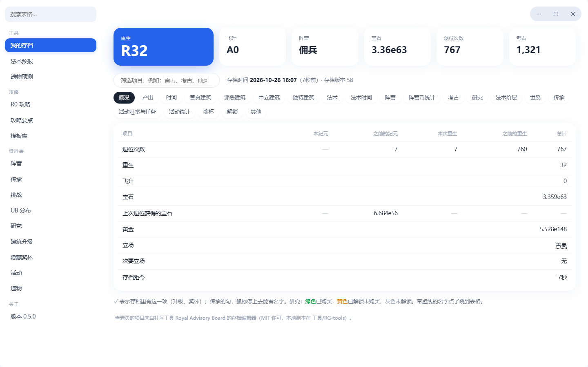
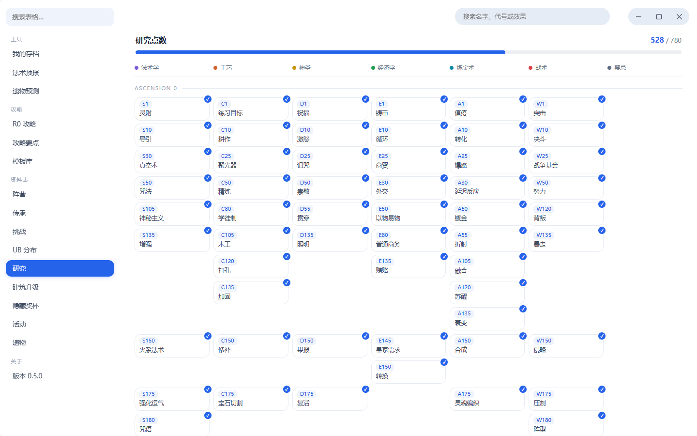
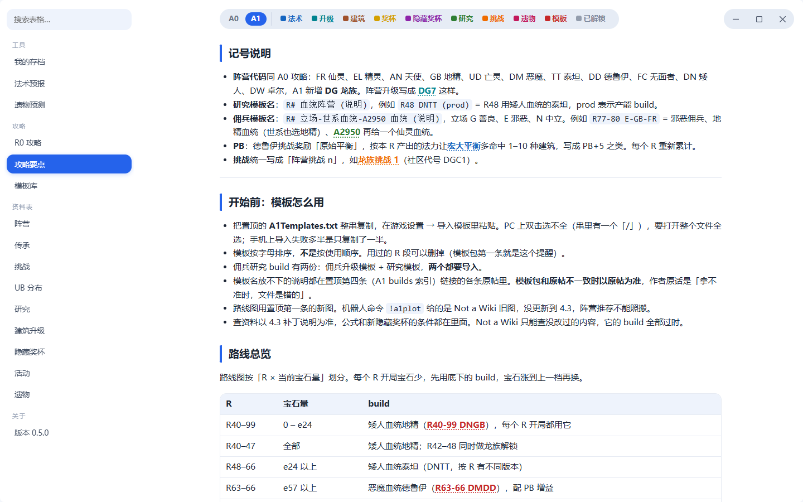
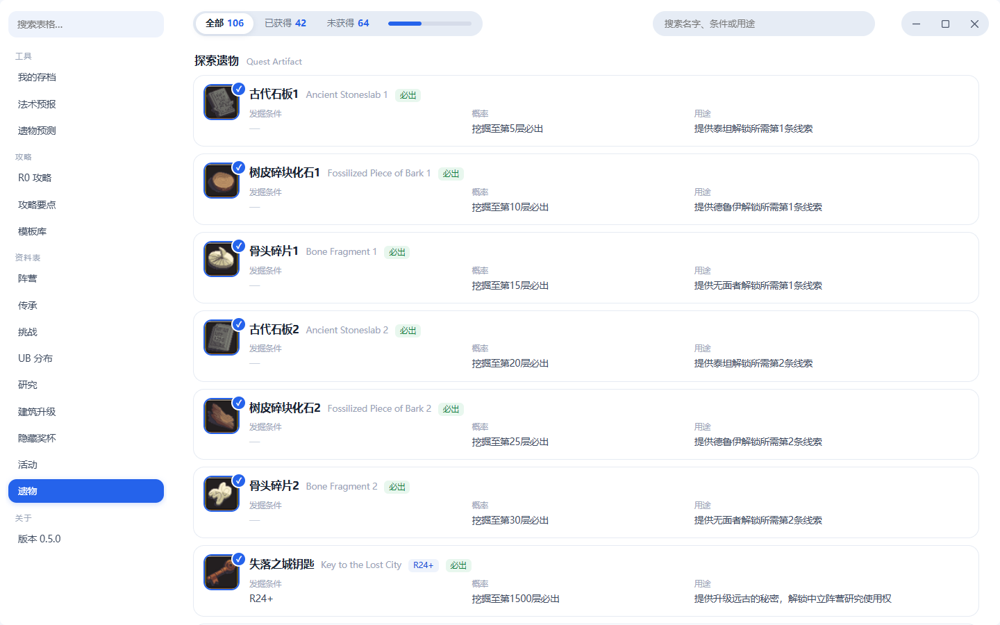

功能
- 我的存档直接读本机 Steam 版存档，游戏保存后自动同步。只读，不改存档。
- 法术预报按存档推算接下来每次施法的随机结果。
- 遗物预测算出接下来几次考古能挖到哪些遗物。
- 攻略R0 新手攻略，A0、A1 攻略要点，整理自官方 Discord。
- 模板库A0、A1 佣兵和研究模板，可以按当前 R 一键加进游戏。
- 资料表阵营、挑战、研究、建筑升级、隐藏奖杯、遗物，按 4.3.14 核对，用游戏译名。
使用
- 01下载 RGA.exe，放在桌面或任意文件夹。
- 02打开游戏，存一次档后 RGA 就能读到，之后每 10 秒同步。
- 03开着就行。新版本后台下载，右下角提示「刷新」或「立即重启」。
游戏窗口里按 F8 开关自动点击。Windows 10 若提示缺少 WebView2，按提示安装即可。
更新记录
%%CHANGES%%